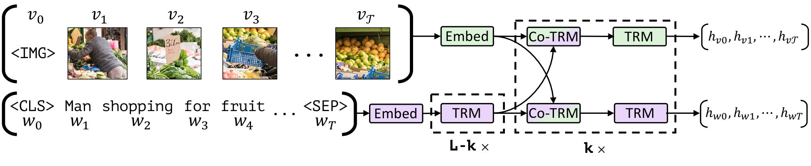
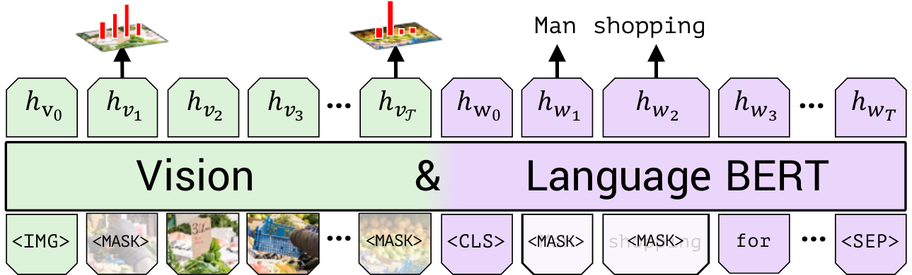
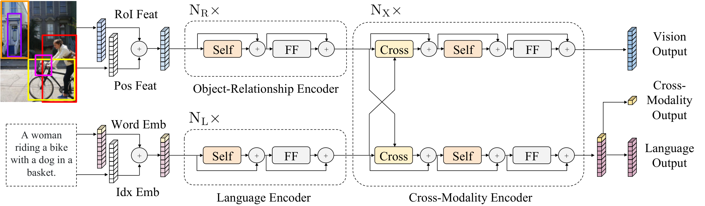
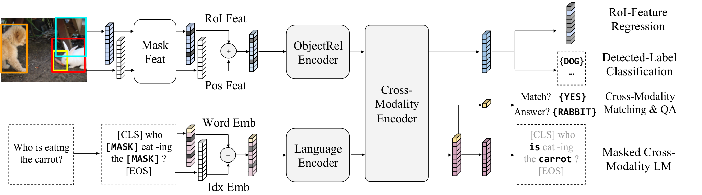
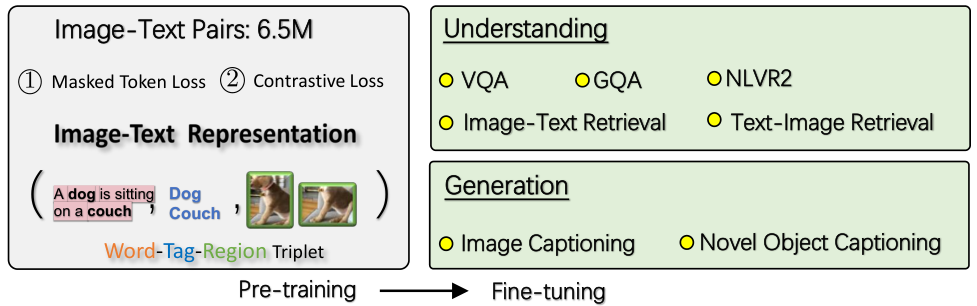
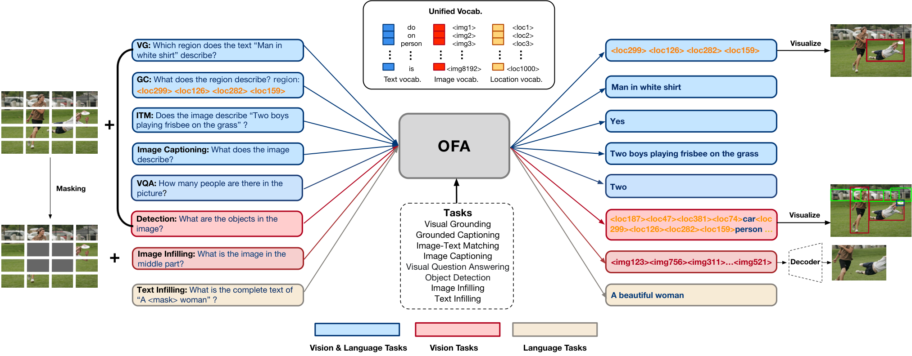

第 11 章 视觉语言预训练经典模型（2019–2021）
💡 本章导读
2019–2021 这三年是"BERT 配方全面出海"的年代：掩码语言建模、图文匹配、预训练+微调两段式，被原样搬到视觉语言任务上，短短两年催生了 ViLBERT、LXMERT、UNITER、OSCAR、VinVL、Pixel-BERT、OFA 等一整代模型。它们如今已不在任何生产系统中，但本章仍然值得精读：预训练目标（MLM/ITM/ITC/区域回归）活在今天每一个 MLLM 的训练配方里；"检测特征 vs grid 特征"之争是理解视觉编码器选型的必经之路；而这一整代模型被 CLIP+LLM 范式取代的过程（第 9 节），是多模态领域最重要的一次范式更迭，其中的教训——数据规模压倒精工特征、复用先验压倒端到端——直接塑造了 2023 年后所有开源项目的架构决策。
1.VLP 时代背景：BERT 配方出海与视觉特征的两次革命
2018 年 10 月 BERT（arXiv:1810.04805）确立了 NLP 的"预训练+微调"范式：海量无标注文本 + 掩码语言建模（Masked Language Modeling, MLM）学出通用表示，每个下游任务只加一个轻量头微调。视觉语言社区立刻面对一个诱惑：把"文本"换成"图文对"，把 MLM 换成多模态版掩码，是否就能得到"视觉语言的 BERT"？这个直觉在 2019–2021 年被反复验证，但它的成立依赖一个前提——文本侧可以直接用 BERT 的 token，视觉侧却必须先回答"图像的最小单元是什么"。这段历史的第一次革命，就是 bottom-up 目标区域特征的胜利。
Bottom-up 区域特征（2017–2020 年的默认答案）。Anderson 等人在 bottom-up attention 工作（arXiv:1707.07998，CVPR 2018）中提出：与其让注意力在均匀网格上"自己找物体"，不如先用在 Visual Genome 上预训练的 Faster R-CNN 检出 10–100 个目标区域（RoI），每个区域池化出一个 2048 维向量——注意力直接在这些"物体级"向量上工作。这个设计的收益立竿见影（图像描述与 VQA 同时涨点），随后成为整个 VLP 世代的标配输入：ViLBERT、LXMERT、UNITER、OSCAR 全部吃 RoI 特征。它的代价在当年被视为"必要之恶"：
| 维度 | Bottom-up RoI 特征 | Grid / patch token 特征 |
|---|---|---|
| 来源 | Faster R-CNN（VG 预训练，1600 类）逐区域池化 | CNN 特征图网格 / ViT patch 序列 |
| 语义单位 | 物体级，天然对齐名词短语 | 空间网格，物体被打散/合并 |
| 数量 | 10–100 个/图（可变长） | 固定（如 7×7=49 或 196/576 个） |
| 前置成本 | 需检测器预训练 + 逐图离线推理缓存 | 端到端，无独立检测器 |
| 开放性 | 词表封闭：检测不到的概念永久丢失 | 开放：一切视觉信息原则上保留 |
| 错误传播 | 检测错误直接污染下游（误检/漏检不可恢复） | 无显式级联，误差可被端到端微调吸收 |
| 代表模型 | bottom-up attention、ViLBERT、LXMERT、UNITER、OSCAR、VinVL | Pixel-BERT、In Defense of Grid Features、ViT 系、全部现代 MLLM |
代码 1：亲手提取 RoI 特征——用 torchvision 的检测模型复现 VLP 世代的标准输入流水线（理解它，你才能真正理解 ViLBERT/OSCAR 论文里 "36 regions × 2048-d" 的含义）：
import torch
from PIL import Image
from torchvision.models.detection import fasterrcnn_resnet50_fpn
from torchvision.models.detection import FasterRCNN_ResNet50_FPN_Weights
from torchvision.transforms.functional import pil_to_tensor
model = fasterrcnn_resnet50_fpn(weights=FasterRCNN_ResNet50_FPN_Weights.DEFAULT).eval()
img = pil_to_tensor(Image.open("demo.jpg")).float() / 255.0
images, _ = model.transform([img]) # 归一化 + 尺寸缩放
features = model.backbone(images.tensors) # 多尺度特征图（OrderedDict）
proposals, _ = model.rpn(images, features, None) # RPN 候选框
box_feats = model.roi_heads.box_roi_pool(features, proposals, images.image_sizes)
print(box_feats.shape) # [框数, 256, 7, 7] → 展平+投影即 VLP 模型的区域输入
# 也可以直接取最终检测结果（带类别分），模拟 bottom-up attention 的 top-K 区域：
with torch.no_grad():
detections = model([img])[0]
keep = detections["scores"] == 0.7 # 置信度阈值
print(keep.sum().item(), "个高置信度区域") # 论文中常取 10–100 个2.双流开端：ViLBERT 与共注意力
ViLBERT（Vision-and-Language BERT，Lu et al., NeurIPS 2019，arXiv:1908.02265）是第一个把 BERT 式预训练搬到视觉语言的模型，它的第一个贡献是诚实面对了一个架构问题：视觉区域序列和文本词序列的"地位"不同——词序列有严格的语法结构，视觉区域是空间集合（顺序无意义），把它们硬拼进同一个双向注意力流（BERT 的做法）未必最优。ViLBERT 的答案：双流（two-stream）——视觉流（绿色）与语言流（紫色）各自拥有独立的 Transformer 层处理模态内结构，只在若干"共注意力（Co-Attention）"层交换信息。

共注意力层的机制值得单独拆开（代码 2 给出实现）：在标准多头注意力中，$\mathrm{softmax}(QK^\top/\sqrt{d_k})V$ 的 Q、K、V 来自同一个序列；共注意力层把 Q 来自一个流、K/V 来自另一个流。语言位置的查询在视觉区域的键上打分，取出"相关区域"的值——这正是注意力对齐（第 9 章图 9-3 的 Show, Attend and Tell 行为）的可学习版本。两个流各自保留残差连接，因此信息交换是"增量的"，两个模态的表示空间不必强行同构——这个性质在今天看来越发正确（第 10 章 modality gap 的启示）。
预训练任务有两个，都是 BERT 目标的多模态改编（见下图）：
（1）掩码多模态建模（Masked Multi-modal Modeling, MML）：对文本做 BERT 式 15% 掩码（80% 替换为 [MASK]、10% 随机替换、10% 保留），但预测时要利用完整的视觉输入——即"看着图填空"：$\mathcal{L}_{MML} = -\sum_{m \in \mathcal{M}}\log p(w_m \mid \tilde{\mathbf{w}}, \mathbf{v})$，其中 $\mathcal{M}$ 是被掩码位置集合，$\tilde{\mathbf{w}}$ 是残缺句子，$\mathbf{v}$ 是全部区域特征。注意视觉侧不做掩码（这是它与后来 LXMERT 的关键差异）。（2）多模态对齐预测（Multimodal Alignment Prediction, MAP）：二分类判断"这句描述是否匹配这张图"，取 [CLS] 表示过线性头——这就是图文匹配（ITM）的最早形态。预训练数据是 Conceptual Captions（约 300 万图文对），规模以当年标准已属"大型"。

下游迁移采用"预训练 + 逐任务微调"：VQA 加分类头、指代理解加匹配头、描述加解码器。ViLBERT 在 VQA 2016、VCR、指代表达理解与图像描述上同时刷新或追平当时最优，证明了"一个预训练模型服务多个任务"在视觉语言上可行——这正是 BERT 时刻在多模态的重演，也是整个 VLP 世代的开端。
import torch
import torch.nn as nn
class CoAttentionBlock(nn.Module):
"""ViLBERT 式共注意力块：两个模态互为对方的 K/V，双向交换信息"""
def __init__(self, d_model=768, n_heads=8, dropout=0.1):
super().__init__()
self.v2l = nn.MultiheadAttention(d_model, n_heads, dropout=dropout, batch_first=True)
self.l2v = nn.MultiheadAttention(d_model, n_heads, dropout=dropout, batch_first=True)
self.norm_l, self.norm_v = nn.LayerNorm(d_model), nn.LayerNorm(d_model)
self.ffn_l = nn.Sequential(nn.Linear(d_model, 4 * d_model), nn.GELU(),
nn.Linear(4 * d_model, d_model), nn.Dropout(dropout))
self.ffn_v = nn.Sequential(nn.Linear(d_model, 4 * d_model), nn.GELU(),
nn.Linear(4 * d_model, d_model), nn.Dropout(dropout))
def forward(self, l, v, pad_mask_v=None):
# 语言查询视觉："看着图说话"；nn.MultiheadAttention(query, key, value)
l_attn, attn_w = self.v2l(self.norm_l(l), v, v, key_padding_mask=pad_mask_v)
v_attn, _ = self.l2v(self.norm_v(v), l, l) # 视觉查询语言：对称方向
l = l + l_attn # 残差：信息交换是增量的
v = v + v_attn
return l + self.ffn_l(l), v + self.ffn_v(v), attn_w
lang = torch.randn(4, 32, 768) # [B, L_text, d]：32 个词
vis = torch.randn(4, 36, 768) # [B, L_vis, d]：36 个区域特征
block = CoAttentionBlock()
l_out, v_out, attn = block(lang, vis)
print(l_out.shape, v_out.shape) # [4, 32, 768], [4, 36, 768]：形状不变，内容已跨模态更新
print(attn.shape) # [4, 8, 32, 36]：每个词对每个区域的注意力权重（可视为软对齐）3.LXMERT：五任务预训练与区域关系编码
LXMERT（Learning Cross-Modality Encoder Representations from Transformers，Tan & Bansal，EMNLP 2019，arXiv:1908.07490）与 ViLBERT 同年月发布，但它走了另一条架构路线，并第一次把预训练目标做成了系统性研究。看它的架构（图 11-4）：视觉侧先用一个对象关系编码器（自注意力 + 位置编码，把 36 个 RoI 的空间关系编码进特征），语言侧一个标准编码器，然后两条流汇入跨模态编码器——词与区域拼接后过共同的双向注意力层（5 层）。相比 ViLBERT 的"各自处理、偶尔对话"，LXMERT 是"各自预处理、深度共居"——离单流只差半步，因此常被称为"双流到单流的过渡形态"。

LXMERT 最大的遗产是五个预训练任务（图 11-5）——它把"预训练什么"从单选题变成了菜单：
（1）掩码语言建模（MLM）：与 ViLBERT 的 MML 相同，词侧 15% 掩码、视觉全量。（2a）掩码目标特征回归（MRFR）：随机掩掉 15% 的视觉 RoI，用其上下文表示回归原始的 2048 维特征（L2 损失）——强迫跨模态编码器为"看不见的区域"重建视觉信息。（2b）掩码目标标签分类（MRC 的前身）：同样的掩码位置，改判 1600 类物体标签（交叉熵）。这两个任务合称 masked object prediction，是"区域目标"的起点。（3）跨模态匹配：50% 概率把描述替换为随机负样本，二分类判断图文是否匹配（ITM）。（4）图像问答（VQA）：直接把预训练阶段的 GQA/VG 问答数据拿来当预训练任务——预训练与下游任务的界线被主动模糊，这是它 VQA 成绩惊人的原因之一。论文统计的预训练语料为约 9.18M 图文对（COCO、Visual Genome、GQA 与 SBU Captions），比 ViLBERT 的 3M 大三倍。

在 2019 年的榜面上，LXMERT 以单模型刷新 VQA 2.0、NLVR² 与视觉推理纪录。论文的注意力可视化还发现：跨模态编码器第一层的注意力图能恢复出场景图（物体-关系结构），语言侧的注意力行为与 BERT 高度相似——即"多模态 BERT 真的学到了 BERT 式的结构"。这些证据让社区确信 VLP 路线有效，随后一年模型数量爆发。
📄 论文精读：Tan & Bansal, LXMERT（EMNLP 2019，arXiv:1908.07490）
问题：如何学习对"视觉+语言"联合任务通用的跨模态表示？方法：对象关系编码器 + 跨模态编码器的三段架构；五个预训练任务（MLM、区域特征回归、区域标签分类、图文匹配、VQA）；约 9.18M 图文对预训练。关键结果：2019 年在 VQA 2.0、NLVR²、GQA 上刷新纪录；消融显示预训练目标越全、迁移越好——"任务菜单"的价值首次被系统验证。为什么重要：MRFR/MRC 这两个区域目标成为 UNITER/OSCAR 世代的标配组件；其"预训练任务即下游任务"（VQA）的策略预示了后来 OFA 的"任务统一"思想。延伸阅读：论文的注意力分析附录是"多模态模型可解释性"的早期范本；与 ViLBERT 对照阅读，可以完整看到双流→单流的过渡逻辑。
4.单流统一：UNITER 与条件层归一化
UNITER（UNiversal Image-TExt Representation，Chen et al.，ECCV 2020，arXiv:1909.11790）把架构问题正面摊牌：双流的"分离参数"到底值不值？它的答案是单流——把词序列与区域特征拼接成一条序列（[CLS], 词, [SEP], 区域特征），送进统一的 Transformer 双向自注意力，所有跨模态交互都发生在层间注意力里。单流的优点是交互最深、实现最简单；代价是模态差异必须由模型自己学出来。消融上 UNITER 与双流对手性能接近，工程上却简洁得多——此后单流成为 VLP 的默认形态（OSCAR、VinVL 皆是）。
UNITER 的两个技术贡献值得记住。第一，预训练目标统一成四件套：MLM、ITM、MRC（掩码区域分类，用 KL 散度代替硬交叉熵以吸收检测标签的模糊性）、MRFR（掩码区域特征回归），外加一个全新的 WRA（词-区域对齐，Word-Region Alignment）：把词-区域匹配建模为最优传输（Optimal Transport, OT）问题——计算词嵌入与区域嵌入的余弦代价矩阵，求最小传输代价作为对齐得分，负样本对的传输代价应更高。OT 的引入让"对齐"从"句级二分类"细化到"词级软对应"，无需显式对齐标注。第二，条件层归一化（Conditional LayerNorm, cLN）：给每个预训练/下游任务学一组独立的 LayerNorm 的 $\gamma,\beta$（$\mathrm{LN}(h) = \gamma_t \odot \hat{h} + \beta_t$，$t$ 为任务 ID），让同一个骨干在不同任务间切换"状态"。这是"任务条件化"最轻量的实现——它的问题（每个新任务都要学 cLN）也预示了 VLP 世代"任务特化"的尽头。
从 UNITER 开始，VLP 模型的论文结构趋于模板化：架构（单流）+ 目标组合（MLM/ITM/MRC/MRFR±WRA）+ 数据规模（几百万对）+ 一排下游任务微调。这个模板让领域快速内卷，也埋下了第 9 节要讲的所有祸根——模板的每个格子都是"工作量"，却没有一格是"通用性"。
5.OSCAR 与 VinVL：对象标签这座语义桥
OSCAR（Object-Semantics Aligned Pre-training，Li et al.，ECCV 2020，arXiv:2004.06165）观察到一个被浪费的信息源：bottom-up 检测器输出区域特征的同时，还输出物体类别标签——"狗、飞盘、草地"这几个词几乎免费，却在图文之间搭起了一座语义锚点。图文对里的描述词与检测标签高度共现（人写描述时就是看着这些物体写的），把标签序列插在词序列与区域序列中间，对齐就多了一条"词↔标签"的捷径通道。

OSCAR 的对比损失形式如下：真实图文对的三元组中，以 50% 概率把标签序列替换为同一 batch 其他图像的标签（负样本），模型要判断标签是否与该图文对匹配：
注意这已经是对比学习思想在 VLP 中的登场（负采样 + 判别），只是对比的单位是"标签序列"而非整图-整句的表示——它与 CLIP 的 InfoNCE 之间只差一步：把"判别真伪"换成"从候选里排序"。OSCAR 以极简的改动在 COCO 检索、NLVR²、VQA 上全面刷新纪录，成为 2020 年最具影响力的 VLP 模型。
VinVL（Zhang et al.，CVPR 2021，arXiv:2101.00520）则问了一个更朴素的问题：如果模型的天花板是视觉特征，那就去把特征做到最好。它把检测器升级为 ResNeXt-152 级联模型，训练数据合并 Objects365、OpenImages 与 Visual Genome，把标签体系从 OSCAR 的 1600 个物体类扩到 1848 个物体+属性类，产出的特征在后续论文中被称为 "VinVL features"。配合 OSCAR 式预训练（通常称 OSCAR+/VinVL 版本），这组特征在 VQA、字幕、检索、grounding 等 7 个基准上刷新纪录，并给出了一个足够震撼的结论：在视觉语言任务上，更好的视觉表示带来的提升，大于任何语言侧的花活。这个结论在今天依然有效——第 14 章 Cambrian-1 的编码器消融研究本质上是它的续篇。
💡 技巧：从 VinVL 结论反推你的 VLM 调参优先级
当你微调 MLLM 遇到瓶颈时，按 VinVL 的启示检查顺序应该是：（1）视觉侧——分辨率够不够、编码器对域的适配够不够、切图策略是否切碎了小目标（第 14、22 章）；（2）数据侧——图文对的描述质量（合成重标注往往比加数据更有效，第 34 章）；（3）最后才是语言侧/连接器的花式改造。2021 年如此，2026 年依然如此。
6.预训练目标全景：MLM / ITM / ITC / 区域目标 / WRA
把前三节的散点收拢，VLP 世代的预训练目标可以整理成一张全景图。每个目标都是"制造残缺或伪造输入 → 迫使跨模态取证 → 用损失恢复真相"这一原则在不同模态上的实例化：
📐 理论推导：ITM 的 batch 内负采样与"难负样本"改进
朴素版 ITM：对 batch 内 $N$ 个真实配对 $(v_i, t_i)$，把句序错位得到 $N-1$ 个假配对，融合编码器输出 [CLS] 表示 $h^{cls}$，二分类：
其中负样本由"图不变、句错位"构造：$\tilde{t}_i = t_{(i+1) \bmod N}$。第一步：指出朴素版的问题。错位负样本与真实图像几乎无关（"狗"的图配"厨房"的句），模型看几个 epoch 就能靠粗粒度线索（颜色词、场景词是否出现）全部分对——损失归零、梯度归零，ITM 头在难样本上不再学习。第二步：ALBEF 的解法。用同 batch 双塔算出的相似度矩阵 $s_{ij}$ 给每个锚点挑"最像"的负样本：$\tilde{t}_i = t_{j^*}$，$j^* = \arg\max_{j \neq i} s_{ij}$——负样本分布追随当前模型的错误模式（对比损失的动态难例挖掘，本质是第 10 章 VSE++ 思想在 ITM 上的转世）。第三步：为什么这有效。ITM 头此时必须依赖细粒度交互（词-区域的对应）而非全局词汇重叠来判真伪——训练信号不再饱和。实证上 ALBEF 的 ITM 显著提升检索精排质量，这一"对比挖难负 + 交叉编码精排"的组合拳成为 ALBEF/BLIP 及今天检索系统（第 42 章召回-重排架构）的标准件。$\blacksquare$
代码 2：VLP 目标函数最小实现——MLM 与"难负样本版 ITM"的组合，任何 VLP 模型的预训练核心都在这 40 行之内：
import torch
import torch.nn as nn
import torch.nn.functional as F
class VLPretrainObjectives(nn.Module):
"""MLM + ITM（难负样本版）：ViLBERT/LXMERT/UNITER/ALBEF 的目标核心"""
def __init__(self, d_model=768, vocab_size=30522):
super().__init__()
self.mlm_head = nn.Linear(d_model, vocab_size) # 复原被掩码的词
self.itm_head = nn.Linear(d_model, 2) # [匹配, 不匹配]
def mlm_loss(self, h_seq, mlm_labels):
# h_seq: [B, L, d] 单流/融合编码器输出；mlm_labels: [B, L]，非掩码处为 -100
logits = self.mlm_head(h_seq) # [B, L, V]
return F.cross_entropy(logits.flatten(0, 1), mlm_labels.flatten(), ignore_index=-100)
@staticmethod
def mine_hard_negatives(sim_vl):
"""ALBEF 式难负样本挖掘：用双塔相似度为每张图挑 batch 内最像的负句"""
B = sim_vl.size(0)
eye = torch.eye(B, dtype=torch.bool, device=sim_vl.device)
return sim_vl.masked_fill(eye, -1e4).argmax(dim=1) # [B] 负句索引
def itm_loss(self, cls_pos, cls_neg):
"""cls_pos/cls_neg: [B, d] 融合编码器对（真配对 / 挖出的假配对）的 [CLS] 输出。
注意：真实实现里融合编码器要把 (图 i, 句 hard_neg[i]) 再前向一次得到 cls_neg；
本函数只负责判别头部分。"""
logits = self.itm_head(torch.cat([cls_pos, cls_neg], dim=0)) # [2B, 2]
labels = torch.cat([torch.zeros(len(cls_pos)),
torch.ones(len(cls_neg))]).long().to(cls_pos.device)
return F.cross_entropy(logits, labels)
torch.manual_seed(0)
B, L, d = 8, 64, 768
h = torch.randn(B, L, d) # 融合编码器输出（教学占位）
mlm_labels = torch.full((B, L), -100, dtype=torch.long)
mlm_labels[:, 10] = 30521 # 假设第 10 个词被掩码，真实词 id=30521
sim_vl = torch.randn(B, B) # 实际来自双塔（对比塔/动量塔）的前向
obj = VLPretrainObjectives()
hard_idx = obj.mine_hard_negatives(sim_vl)
print("每张图的最难负句索引:", hard_idx.tolist())
loss_mlm = obj.mlm_loss(h, mlm_labels)
cls_neg = h[torch.arange(B), 0].roll(1, dims=0) # 教学：错位 [CLS] 当假配对
loss_itm = obj.itm_loss(h[:, 0], cls_neg)
print(f"MLM={loss_mlm.item():.2f} ITM={loss_itm.item():.2f}")
# 总目标 = 加权和 L = λ1·MLM + λ2·ITM（λ 通常取 1，但它是重要消融变量）代码 3：区域目标的实现（MRFR 与 MRC）——复现 LXMERT/UNITER 时需要补上的最后一块拼图：
import torch
import torch.nn as nn
import torch.nn.functional as F
class RegionObjectives(nn.Module):
"""掩码区域目标：MRFR（特征回归）+ MRC（标签分类，KL 软监督）"""
def __init__(self, d_model=768, n_region_classes=1600):
super().__init__()
self.regress_head = nn.Linear(d_model, 2048) # 回归原始 RoI 特征维
self.classify_head = nn.Linear(d_model, n_region_classes)
def mrfr_loss(self, h_masked_region, roi_gt):
# h_masked_region: [K, d] 被掩码位置的跨模态表示；roi_gt: [K, 2048] 原始特征
return F.mse_loss(self.regress_head(h_masked_region), roi_gt)
def mrc_loss(self, h_masked_region, soft_label):
# soft_label: [K, C] 检测器的软标签（带物体类别概率；LXMERT/UNITER 用 KL 而非硬 CE，
# 因为检测输出本身有噪声，软目标能吸收标签模糊性）
log_p = F.log_softmax(self.classify_head(h_masked_region), dim=-1)
return F.kl_div(log_p, soft_label, reduction="batchmean")
torch.manual_seed(0)
K = 32 # 被掩码的区域数
h = torch.randn(K, 768)
roi_gt = torch.randn(K, 2048)
soft = F.one_hot(torch.randint(0, 1600, (K,)), 1600).float()
soft = 0.7 * soft + 0.3 * torch.full_like(soft, 1 / 1600) # 模拟带平滑的检测软标签
ro = RegionObjectives()
print(f"MRFR={ro.mrfr_loss(h, roi_gt).item():.3f} MRC={ro.mrc_loss(h, soft).item():.3f}")
# 单流实现要点：先对 RoI 序列做 15% 随机掩码（替换为可学习的 [MASK] 区域嵌入），
# 前向后取被掩码位置的表示过这两个头；MRFR 只对被掩区域、MRC 用同一批位置的表示7.走向端到端与统一框架：Pixel-BERT → OFA
VLP 世代内部也在自我革命，方向正是第 1 节的"特征之辩"。Pixel-BERT（Deng et al.，arXiv:2004.06120，2020）第一个把检测器整个扔掉：直接取 ResNet 特征图的 grid 特征，与文本 token 一起端到端预训练（MLM+ITM），让视觉编码器在图文目标的压力下自己学"该看哪里"。同年《In Defense of Grid Features for Visual Question Answering》（CVPR 2020）用实验证明：在 VQA 上纯 grid 特征可以追平精心调教的 bottom-up 特征——检测特征的"物体先验"优势在预训练面前是可以被抵消的。ViT（arXiv:2010.11929）落地后，patch token 成为 grid 特征的终极形态，这场辩论就此终结（第 14 章会从编码器选型角度再复盘）。
另一条线走向任务统一。NVIDIA 的 UNICORN（2021）用多任务预训练串起 RAINBOW 数据集，但仍是"多任务多判别头"；真正把 VLP 收官的是 OFA（One For All，Wang et al.，ICML 2022，arXiv:2202.03052）：把所有任务——视觉定位、图像描述、图文匹配、VQA、目标检测、图像填充、文生图——统一写成"指令 + 序列到序列生成"。检测框输出为离散坐标 token，图文匹配输出 yes/no，文生图输出离散图像 code（dVAE 词表），全部用同一个 BART 式编码-解码器以自回归方式生成。OFA 证明了一个重要命题：当任务被统一成生成，判别头可以全部退役——这正是 GPT 式"任务即文字"的多模态版，也是 VLP 世代留给 LLM 时代的最后一份遗产。

8."VLP 模型 × 预训练目标"大矩阵
把本章的模型与第 6 节的目标放到一张矩阵里，整个 VLP 世代的"配方空间"一目了然：
| 模型（年份） | MLM | ITM/对齐 | ITC 对比 | MRC 区域分类 | MRFR 区域回归 | WRA/OT | LM 生成 | 视觉特征 | 架构形态 |
|---|---|---|---|---|---|---|---|---|---|
| ViLBERT（2019） | ✓（MML） | ✓（MAP） | — | — | — | — | — | RoI（36 区域） | 双流共注意力 |
| LXMERT（2019） | ✓ | ✓ | — | ✓ | ✓ | — | — | RoI（36 区域） | 双流→跨模态编码器 |
| UNITER（2020） | ✓ | ✓ | — | ✓ | ✓ | ✓（最优传输） | — | RoI | 单流 + 条件 LN |
| OSCAR（2020） | ✓（词+标签） | — | ✓（标签判别） | — | — | — | — | RoI + 1600 类标签 | 单流 |
| VinVL（2021） | ✓（词+标签） | — | ✓（标签判别） | — | — | — | — | RoI（1848 类，X152） | 单流 |
| Pixel-BERT（2020） | ✓ | ✓ | — | — | — | — | — | grid（ResNet） | 单流、端到端 |
| ALBEF（2021） | ✓（动量蒸馏） | ✓（难负样本） | ✓（InfoNCE） | — | — | — | — | ViT grid | 双塔对齐 + 融合塔 |
| BLIP（2022） | — | ✓（CapFilt 过滤） | ✓（ITC） | — | — | — | ✓（MED 解码器） | ViT grid | 编码-解码混合 |
| OFA（2022） | — | ✓（指令化） | — | — | — | — | ✓（统一 seq2seq） | ViT patch | 编码-解码器统一 |
读这张矩阵的三个观察：（1）目标在收敛——从 LXMERT 的五件套到 ALBEF/BLIP 的"ITC+ITM+MLM/LM"三件套，区域目标随 RoI 特征一起退场，对比与生成胜出；（2）架构在收敛——双流（ViLBERT）→ 单流（UNITER/OSCAR）→ 双塔+融合（ALBEF）→ 编码-解码统一（BLIP/OFA），每一步都在减少"任务特化组件"；（3）矩阵的终点是"只剩 LM 一列"——2023 年后的 MLLM 把所有目标都塞进"下一个 token 预测"的生成框架，这张表的后半段历史就是"列的消失史"。
9.为什么被 CLIP+LLM 范式取代：历史的教训
VLP 世代的模型个个在自己的榜面上称王，却在 2022–2023 的 18 个月内整体出局。这不是某个单点失败，而是范式级的五个错配——每一条都值得今天的模型构建者引以为鉴。
错配一：数据哲学——精工百万对 vs 噪声亿级。VLP 世代信任"干净数据"：Conceptual Captions 的百万级图文对经过人工审核，预训练数据动辄清洗标注。CLIP 用 4 亿未经清洗的网络图文对 + 对比学习证明：数据规模带来的多样性远比单条数据的整洁重要——概念覆盖度（长尾概念、跨语言、梗图、手写体）是判别式微调永远追不回来的。VLP 模型在域外零样本迁移上的集体疲软，根子在这里。
错配二：视觉输入被检测器锁死。RoI 特征的三个死结（词表封闭、级联误差、离线缓存成本）在第 1 节已经详述。VLP 世代不是没看到问题——VinVL 花大力气把检测器做到极致，恰恰证明了特征是全系统的瓶颈；但它的解法仍是"更好的检测器"，而正确的解法是"换一种特征货币"（grid/patch + 大规模预训练）。当系统的天花板是上游模块时，优化上游模块内部不如更换上游范式。
错配三：语言塔太小，等于从零学语言。这是最贵的一课。VLP 模型的语言侧是 BERT-base/large（1.1–3.4 亿参数），在几百万图文对上训练——这个配置学不到世界知识与推理能力，语言塔只能学到"描述性词汇与模板"。而 CLIP+LLM 范式直接复用千亿 token 训出的 LLM：语言理解、世界知识、推理、指令跟随全部免费携带，多模态预训练只需要做"翻译"（对齐）。VLP 时代相当于每造一个视觉语言模型都重学一遍语言——2023 年后无人再这么干。
错配四：任务特化的迁移成本。VLP 的迁移协议是"每任务一个头 + 全模型微调"：VQA 头、检索头、grounding 头、cLN 条件……新任务、新领域都要重新训练。CLIP 的零样本分类与 Flamingo 的少样本学习展示了另一种可能：模型能力应该由指令与示例在推理时指定，而不是由训练时的新头指定。LLM 的指令跟随把这个优势放大到日常交互层面——用户不会为每个问题训练一个分类头。
错配五：生成能力缺位。VLP 的目标矩阵（表 11-2）以判别为主，描述生成只是少数模型的副业。但用户真正想要的是"看着图自由对话"——开放式生成、多轮交互、推理链。判别式模型给不出这个产品形态，而 LLM 解码器天然就是生成式的。产品需求最终裁决了技术路线。
| 维度 | VLP 世代（2019–2021） | CLIP+LLM 范式（2022–今） |
|---|---|---|
| 视觉输入 | 检测器 RoI 特征（词表封闭） | CLIP/SigLIP ViT patch token（开放） |
| 预训练数据 | 百万级清洗图文对（CC、COCO、VG） | 4 亿–数十亿网络图文对 + 合成重标注 |
| 语言侧 | BERT-base 从头学语言（知识贫乏） | 复用预训练 LLM（知识/推理/指令全自带） |
| 预训练目标 | MLM/ITM/MRC/MRFR/WRA 判别组合 | ITC 对比对齐 + 生成式 LM |
| 任务迁移 | 每任务一头、逐任务微调 | 零样本/少样本/指令跟随，推理时切换 |
| 交互形态 | 离线打分（检索/分类） | 多轮对话、开放生成、Agent 工具调用 |
| 代表终局 | VinVL/OFA 后谱系停止演进 | BLIP-2 → LLaVA → Qwen-VL → 原生统一模型 |
🕰 历史一刻：VLP 世代的 18 个月落幕（2021.01–2022.08）
2021 年 1 月，BLIP（arXiv:2101.12200）与 CLIP（arXiv:2103.00020）几乎同时出现——前者还带着 VLP 的完整血统（ITC+ITM+LM 三头），后者干脆抛弃了"预训练+微调"本身。2021 年下半年 ALBEF 完成"对比+融合"的桥接；2022 年 Flamingo 证明冻结 LLM 可以少样本交错理解、ChatGPT 让"对话"成为模型的默认形态；2022–2023 年之交，BLIP-2 用 Q-Former 把冻结的 CLIP 塔接到冻结的 LLM 上、LLaVA 用一层线性投影做到了同样的事——至此，"VLP 判别编码器 + 任务头"的整条技术路线不再是任何新项目的默认选择。值得注意的是技术遗产的归宿：ITM 难负样本挖掘活在 BLIP-2 与现代检索重排中，MLM/生成目标活在图文交错预训练中，grounding 坐标 token 活在 Kosmos-2/Ferret 中，"对象标签"思想活在知识增强与 OCR tag 中。范式死了，器官被移植了。
🍳 实战配方：今天复现一个 VLP 模型的正确姿势
如果你想以 VLP 为研究基线（比如研究对齐机制或做消融），2026 年的正确做法是现代化复现而非考古式复现：视觉侧用 ViT-B/16 grid 特征（不要用 RoI）；目标用 ITC + 难负样本 ITM + MLM 三件套（丢弃 MRC/MRFR/WRA）；数据用 CC3M 子集（300 万对）；架构用单流融合编码器（BERT-base 规模）；batch 1024+、AdamW lr 1e-4（塔 2e-5）、warmup 2k 步、bf16。验收标准：COCO 检索 R@1 与"随机 + 文本先验"双基线拉开数量级、ITM 判别在 POPE 式平衡探针上不塌。这个配置在单张 A100 上约 1–2 天可完成，足够支撑机制类研究；若目标是复刻当年榜面成绩，请参考各论文原始超参数并自备检测特征缓存。
10.本章小结与自测
本章完整走过了 VLP 世代：它始于 bottom-up 检测特征与 BERT 配方的结合（ViLBERT 的双流、LXMERT 的五任务），经单流统一（UNITER 的 cLN 与 WRA）、语义桥梁（OSCAR/VinVL 的对象标签）走向成熟，由 Pixel-BERT 的端到端化与 OFA 的任务统一完成内部革命，最终在 CLIP+LLM 的数据规模、语言先验与生成形态三重碾压下落幕。它的五个预训练目标里，ITC/ITM/MLM 三个存活并成为现代 MLLM 配方；它的架构争论（双流/单流/双塔+融合）在连接器设计中留下了清晰回声；它失败的方式——每个组件都在优化，整个范式却被绕过——是全书最值得反复咀嚼的历史课。下一章的主角 CLIP，将把对比学习推到这套逻辑的极致。
✏️ 自测（先作答，再看答案要点）
1. 双流（ViLBERT）与单流（UNITER）的核心权衡是什么？为什么最终单流胜出？
答案要点：双流保留模态各自的处理结构（视觉空间集合 vs 语言序列），交互浅但先验清晰；单流交互最深、实现简单。单流胜出因为在数据规模有限的判别式预训练下，交互深度带来的收益大于模态结构先验的收益，且工程更简单；"模态结构差异"的问题后来由连接器与 modality gap 研究以另一种方式回答。
2. LXMERT 的五个预训练任务中，哪两个是区域目标？各自的损失形态与动机是什么？
答案要点：MRFR（掩码区域特征回归，L2 损失回归 2048 维 RoI 特征——重建视觉信息）与 MRC（掩码区域标签分类，对 1600 类做软标签 KL/交叉熵——恢复语义身份）。动机：强迫跨模态编码器利用文本与上下文补全视觉，建立双向取证能力。
3. OSCAR 的对象标签为什么能充当图文间的"语义桥"？它与 CLIP 的对比学习差在哪一步？
答案要点：标签是检测器输出的词序列，与描述词高度共现，为对齐提供免费锚点；其对比损失对"标签序列是否匹配图文"做二分类。与 CLIP 差的一步：CLIP 直接对整图-整句的全局表示做 batch 内排序（InfoNCE），不需要检测器与词表；OSCAR 的判别被限定在标签空间内，开放性受限。
4. 朴素 ITM 的随机负样本为什么会让训练信号饱和？ALBEF 的解法与第 10 章的哪个思想同源？
答案要点：随机错位的负样本太"假"，模型靠词汇重叠等粗粒度线索即可全部分对，损失与梯度迅速归零，ITM 头停止在难样本上学习。ALBEF 用双塔相似度挖 batch 内最难负样本作为判别对象，使 ITM 必须依赖细粒度交互——与 VSE++ 的"最难负样本"思想同源（优化预算集中在危险配对上）。
5. 列出 VLP 范式被取代的三个根本原因，并各给一个"现代仍在犯的类似错误"的例子。
答案要点：（1）数据规模/多样性不足 vs 过度清洗——类似错误：用精标小数据做 MLLM 对齐预训练而不用大规模网络对+合成重标注；（2）上游模块锁死系统天花板（检测特征）——类似错误：锁死低分辨率视觉塔不升级（分辨率/编码器瓶颈，第 14、22 章）；（3）语言塔过小、不复用大模型先验——类似错误：自训小语言主干而放弃开源 LLM 的知识先验；另可答任务特化迁移成本高（对应今天不加指令数据、只加任务头训练）。